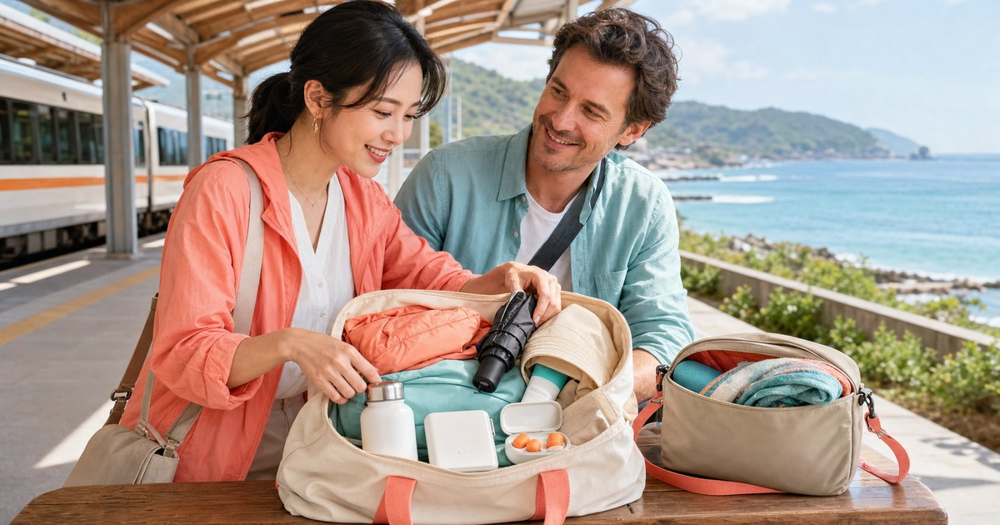

一日輕旅行包裡放什麼：防曬、充電、耳塞、雨具與保暖層
一日輕旅行最怕包很滿，真正需要的東西卻找不到。這篇從包款分區、防曬、充電、耳塞、雨具與保暖層出發，整理一個適合城市移動與週末短行程的包內配置。

先決定包款：好拿比很能裝更重要
S′AIME 東京企劃適合放在城市感包款與通勤旅行轉換的主軸裡。若你一整天會進出車站、咖啡店、展覽、海邊或小山城，包款要先看開口、肩帶、重量和取物順序。
UD LAB 則適合放在快扣肩背、小包和戶外方包的補充選項。輕旅行包不是越大越好，而是要讓你不用翻很久，就能拿到票卡、手機、耳塞、雨具和水瓶。
- 主包放長時間用品：外套、傘、水瓶、行動電源。
- 小包放即取用品：票卡、手機、耳機、護唇膏。
- 濕物袋獨立放：雨傘、毛巾、臨時垃圾。
充電和安靜休息，是一日移動的安全感
Momax Taiwan 適合安排在行動電源、充電線與旅途電子配件。不要等手機低電量才找插座，短途旅行最容易消耗電力的其實是導航、拍照和查班次。
耳根清靜的耳塞則適合處理車廂、旅館午休、咖啡店吵雜或同行者打呼這類狀況。耳塞不是只為睡覺，也可以是幫自己保留安靜的工具。
防曬、雨具與保暖層要互相補位
UV100 可以放在防曬外套和帽款的核心位置；FULTON 適合城市短移動的晴雨傘；Litume 意都美則適合補齊偏戶外的輕量外層與旅行用品。
一日旅行最常見的錯誤，是只看出門那一刻的天氣。早上太陽大、下午下雨、晚上冷氣或海風變強，都很常見。包裡固定放一件可折外層、一把輕傘和一個防水小袋，整天都會比較穩。
- 太陽：防曬外套、帽子、墨鏡。
- 沒電：行動電源、短線、備用接頭。
- 下雨：晴雨傘、防水袋、小毛巾。
- 吵雜：耳塞或降噪耳機。
- 溫差：薄外套或可收納襯衫。
包內分區比清單更重要
清單寫得再完整，如果包內沒有固定位置，最後還是會亂。建議把包內分成三區：立即拿、半天拿一次、備而不用。每次回家只要照這個邏輯補齊，下一次出門就不用重想。
- 立即拿：手機、票卡、鑰匙、錢包。
- 半天拿一次：行動電源、耳塞、水瓶、雨傘。
- 備而不用：外套、藥包、防水袋、備用口罩。
先把包內物品變成幾個模組
與其每次出門重新列清單，不如建立幾個固定小袋。充電與線材一袋，耳塞與衛生小物一袋，雨具與防水袋一區，錢包證件一區。這樣即使從通勤包換成週末斜背包，也只是把模組移過去。
S′AIME東京企劃適合日常穿搭感較強的包款，UD LAB 則適合偏機能與快取需求。選包時不只看容量，也要看這些模組能不能各就各位；如果每次拿行動電源都要翻出雨衣，分區就是失敗的。
- 充電模組：行動電源、短線、轉接頭。
- 天氣模組：折傘、防水袋、薄外套。
安靜與電量，是一日行程的情緒緩衝
Momax 處理的是電量焦慮，耳根清靜處理的是噪音疲勞。這兩件事看起來不像旅行主角，卻常常決定整天的狀態：手機快沒電時，人會一直找插座；交通工具太吵時，到目的地前就已經累了。
行動電源不用盲目追求最大容量，耳塞也不是越隔音越好。真正適合放進一日包的，是重量、舒適度與使用頻率之間的平衡。它們最好都能放進同一個小袋，讓你在車上、咖啡廳或候車時快速拿到。
- 電量備案要輕到願意每天帶。
- 耳塞只在安全情境使用，不在需要注意環境聲音的路段使用。
防曬、雨具與保暖層要能互相替換
UV100 的防曬外套、FULTON 的傘具與 Litume 的輕量外層，可以被視為三個互補開關。日曬強時靠外套與傘，午後雨時靠傘與防水袋，冷氣或傍晚風大時靠薄外層。每件東西都不需要很厚重，但要能在不同時段接力。
這種配置的好處，是你不會因為怕下雨就背太多，也不會因為想輕便就完全沒有備案。包裡的每一件物品都要有兩個以上用途，才值得在一日行程裡佔空間。
- 外套可同時處理防曬與冷氣。
- 折傘可同時處理短雨與強光。
FAQ
一日輕旅行要帶多大的包？
看行程而定。城市散步和展覽可以用斜背小包加折疊外套；若有海邊、山路或長時間戶外，建議用能放水瓶、傘和薄外套的肩背或後背包。 實際選購仍要回到你的交通方式、使用頻率、收納位置與商品頁規格，不建議只看單一品牌或單一功能。
行動電源和雨傘要不要每天都帶？
若行程超過半天、需要導航或拍照，行動電源很值得固定放；雨傘則看季節與地點，春夏午後雨多時建議固定帶輕量晴雨傘。 實際選購仍要回到你的交通方式、使用頻率、收納位置與商品頁規格，不建議只看單一品牌或單一功能。
耳塞適合放在旅行包嗎？
適合。車廂、咖啡店、旅館午休或臨時需要安靜時都能用，體積小但很容易提高整天的舒適度。 實際選購仍要回到你的交通方式、使用頻率、收納位置與商品頁規格，不建議只看單一品牌或單一功能。
下一步建議
如果你正在整理一日輕旅行包，先固定包內分區，再補防曬、充電、耳塞、雨具和保暖層，會比臨時塞東西更可靠。
重要警語
本文為一般選購與生活情境整理，不構成醫療、專業戶外訓練或安全保證。戶外活動請依天候、路線、個人體能與現場規範評估；涉及護具、防曬或雨具等用品，實際規格、價格、活動與庫存請以商品頁公告為準。
本文含品牌／商品導購連結；若你透過部分商品連結前往選購，Elite Fashion 可能取得合作收益。本文仍以編輯判斷與使用情境整理為主，價格、規格、活動與庫存請以商品頁公告為準。